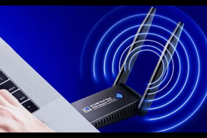
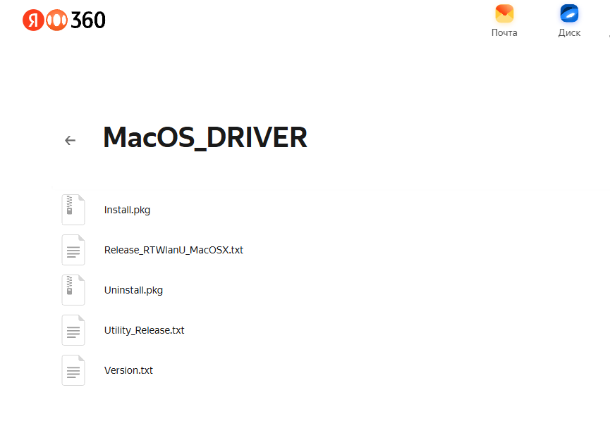

Высокоскоростной двухдиапазонный адаптер для стабильного соединения
Пожалуйста, ознакомьтесь с инструкцией перед установкой и использованием нашего адаптера! Это избавит Вас от многих вопросов.
Что-то не получается? Пишите нам в поддержку:
Telegram: @ggstoresupport
Беспроводной двухдиапазонный USB WiFi и Bluetooth адаптер предназначен для подключения компьютера, ноутбука к роутеру, модему или телефону по беспроводной сети Wi-Fi на частотах 2,4 и 5 ГГц, а также подключения к ПК или ноутбуку устройств по Bluetooth.
Wi-Fi работает на ОС Windows XP (версия после 2005 года с поддержкой WPA2), Vista 7,8,10,11, MacOS 10.9-10.15
Bluetooth - ТОЛЬКО НА WINDOWS 7,8,10,11
Вставьте адаптер в USB порт ПК.
В Windows 10,11 драйвера устанавливаются автоматически. Если этого не произошло, установите драйвера вручную.
В Windows 7 включите службу автонастройки WLAN, без нее адаптер работать не будет.
Для установки драйверов вручную:
В скачанной папке найдите установочный файл Setup и запустите установку.
После установки перезагрузите компьютер.
После обновления Windows может установиться некорректный драйвер. Решение:
Скачайте папку с драйверами на Ваш Mac: Скачать драйвера
Запустите файл Install.pkg, далее - Agree - Install.
Введите пароль входа в систему (если он задан) и нажмите Software. Продолжите установку, нажав Continue Installation.
После установки перезагрузите компьютер и подключитесь к вашей сети Wi-Fi.
Драйвера на Bluetooth скачиваются и устанавливаются аналогично драйверам WiFi: Скачать драйвера
Перед установкой убедитесь, что в диспетчере устройств отсутствует устройство Realtek Bluetooth 4.0 (удалите его, если обнаружено).
После установки:
ВАЖНО! Если устройства не сопрягаются, убедитесь что:
Для более высокой скорости и устойчивого соединения рекомендуем подключаться к 5Гц (убедитесь, что у вас двухдиапазонный роутер).
Если адаптер не видит сеть 5 Гц, измените в настройках роутера канал (от 36 - частота для 5 ГГц).
Убедитесь, что ваш роутер поддерживает диапазон 5 ГГц и канал настроен на значение от 36. Попробуйте обновить драйвера адаптера.
Проверьте, что служба Bluetooth запущена (тип запуска - автоматически). Удалите устройство Realtek Bluetooth 4.0 в диспетчере устройств и переустановите драйвера.
Подключитесь к диапазоне 5 ГГц, используйте канал 149 или 151, установите ширину канала на 80 МГц и разместите адаптер в прямой видимости роутера.
На данный момент адаптер официально поддерживает Windows и MacOS. Для Linux могут потребоваться дополнительные драйвера, обратитесь в поддержку.
Если у вас остались вопросы или возникли проблемы с адаптером, мы всегда готовы помочь!
Telegram: @ggstoresupport
Мы отвечаем в течение 24 часов в рабочие дни.
Поделитесь своим мнением об адаптере:
Оставить отзыв Написать в поддержку